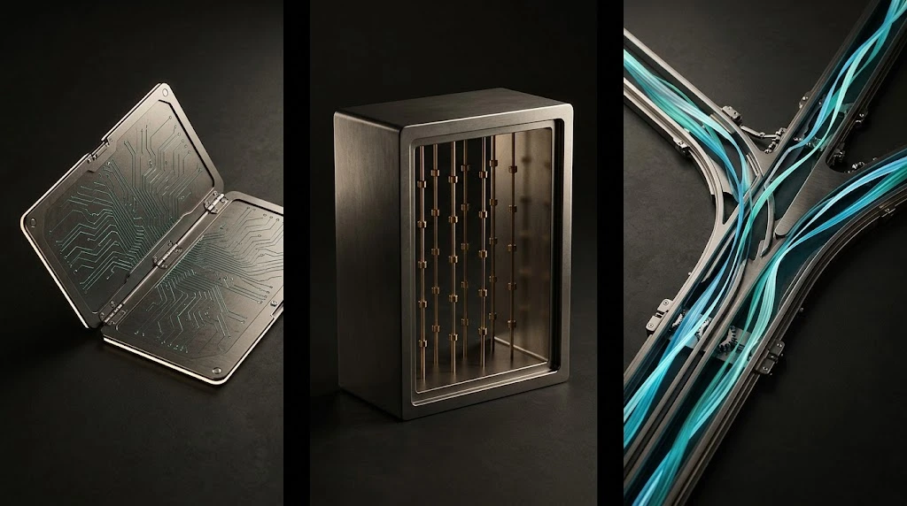
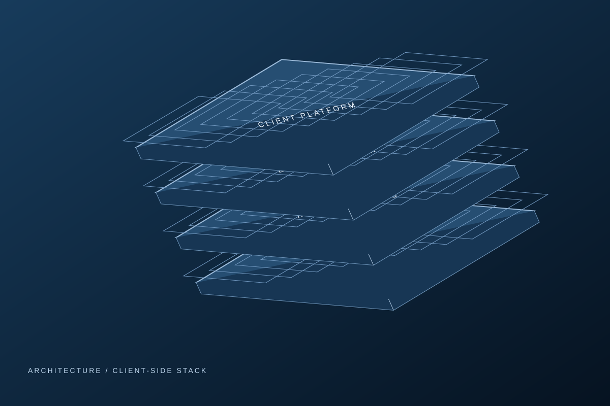
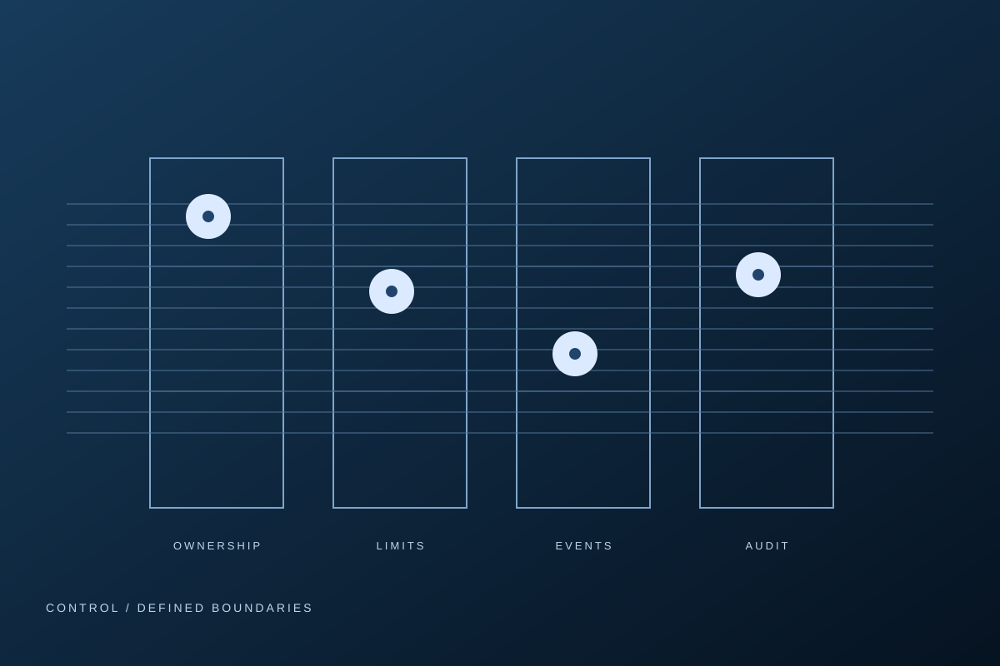
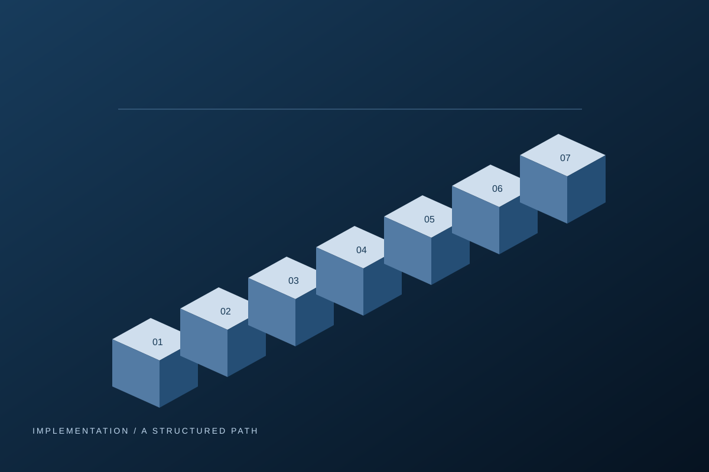

You saw the date
The number is there, the meaning is not.
ORION QUANT TECHNOLOGIES / CLIENT-SIDE SOFTWARE
Economic analysis becomes algorithmic execution.
The OrionQuant Engine continuously evaluates economic data and geopolitical developments and uses quantitative models to compute orders executed automatically on your brokerage account.
Step inside the engine ↗The same list is on the screen before every trading week. Dates, countries, numbers. What a release means for a currency, and how rates, inflation and politics interact worldwide, is not in there.
Those are exactly the connections the OrionQuant Engine evaluates, continuously.
The number is there, the meaning is not.
How rates, inflation and politics interlock is in no calendar.
By the time it is clear, the market has moved.
THE SYSTEM BEHIND THE EXECUTION
This is how data becomes an executed order. The engine condenses several data sources into one trend per currency and passes the computed orders straight to MetaTrader or cTrader.
Economic data, rates, macro events, geopolitics and market prices.
Defined models evaluate economic context and configured limits.
Eligible instructions reach your platform and your own broker account.
Interactive architecture illustration. Not actual product hardware or a product screenshot.
An economic release enters the data stage. Predefined rules evaluate it alongside related context before an eligible instruction can reach the execution platform.

 Your platform. Your broker account.
Your platform. Your broker account.The OrionQuant Engine is OQT's core software product. Clients license the software and operate it on their own account. OQT provides the technology and technical support. Control over capital and account remains entirely with you.
We develop and operate the technical foundation of the software. You receive a license, the system components, and technical support.
The software runs on your own broker account. All capital remains fully under your control. OQT has no access to funds or withdrawals.
Once activated, the system executes predefined rules automatically. No trading operation of your own is required.
No access to client funds or withdrawals. Trading decisions and outcomes remain your responsibility.

SOFTWARE / CONNECTIVITY / VALIDATION
Software infrastructure for automated capital deployment. From system integration to operational use.

OrionQuant Engine / Technical Infrastructure / Data & Analytics
After the initial setup, the software executes defined processes fully automatically, without manual intervention. Every step is traceable and fully documented.
TECHNICAL INFRASTRUCTURE / MANAGED HOSTING
OQT supports the technical onboarding and the initial system setup.
DATA & ANALYTICS / DATA DRIVEN INSIGHTS
Strategies are technically evaluated using historical data and defined test scenarios. Backtesting and analysis serve a structured assessment prior to productive use.
Named in OrionQuant's product materials. No live connection or partnership is implied by this page.
Economic releases, rates and market prices enter the workflow.
Predefined parameters determine how the inputs are processed.
MetaTrader 4/5 or cTrader connects the software to your broker account.
You supervise the deployment. Software support follows the agreed scope.
Transparent insight into all system operations. All processes are clearly documented and fully traceable.
Execution follows clearly defined rules and models. Manual or emotional intervention is systemically excluded.
Technical controls are defined during configuration. They do not guarantee availability or prevent trading losses.
Technical controls are defined during configuration. They do not guarantee availability or prevent trading losses.
Explore an illustrative workflow under normal conditions, a volatility shock or a connection interruption.
Conceptual workflow only. Not live market data, investment performance or verified product behavior.
Backtests and simulations do not predict future performance or remove trading risk.
Inputs arrive, checks run, and eligible instructions proceed through the defined workflow.
Historical scenarios and non-production testing can help assess system logic, configuration and recovery. Evaluation should include assumptions, data sources and the full test conditions. Backtests and simulations do not predict future performance or remove trading risk.

We prioritize capital preservation over capital gain. Return oriented execution operates within clearly defined risk frameworks and technical control mechanisms.
Risk notice: capital preservation is an objective, not a guarantee. Trading can result in losses, including loss of all capital deployed. Controls cannot eliminate market, operational or technology risk.

Your capital remains in your own account. OQT has no technical access to withdrawals or account management. Capital and accounts remain under your control.
Risk limits integrated into the code are applied automatically. When defined risk thresholds are reached, the system reduces or closes positions to limit potential losses.
Relevant market events are taken into account at the system level. Processing is rule based and relies on external data sources such as ForexFactory.
Transparent insight into all system operations. All processes are clearly documented and fully traceable.
From architecture to implementation. A structured path from evaluation to operational use.

Every collaboration begins with a non-binding initial call. During this conversation, we review your existing structure, processes, and technical setup to jointly assess how our software can be applied effectively.
Clarifying objectives / Infrastructure Overview
The test phase focuses on technical validation in a realistic environment. Stability, system logic, and functional correctness are assessed, while performance is reviewed as a supporting aspect.
Straightforward system access / Realistic test environment / Technical validation of stability and logic / Automatically time-limited
A detailed discussion of functionality and system architecture. We review technical requirements and the intended level of automation. This is not a sales call, but a purely technical discussion.
After the test phase, you decide freely whether to proceed. We offer transparent and flexible licensing models with clear defined terms. Continuation only occurs following an active decision.
no obligation / Transparent pricing models
Following the agreement, we provide the license and all required setup files. Installation is completed either independently using clear documentation or with support from our technical team.
Separation of software and capital / Installation within your own environment
You activate the system independently within your existing infrastructure. Operational control remains entirely with your organization. OQT provides software and technical support only.
Operational control remains with client / Client-side operation
Throughout the license term, we provide technical support, system updates, and assistance with configuration questions. Operational responsibility remains entirely with the customer.
Regular system updates / Technical support / Support during initial setup / Support for software-related issues
No. OQT is a non-custodial software solution. Your capital remains entirely in your own brokerage account. The software operates within your existing account structure and has no access to withdrawals or external transactions.
The software requires configuration, risk awareness and ongoing supervision. OQT provides technical onboarding. Strategy choices and trading outcomes remain the client's responsibility.
The engine is operated by the client on their own infrastructure, typically a VPS or company server. Confirm connectivity, recovery procedures and hosting responsibilities during technical onboarding.
No. OQT develops and licenses software. It does not manage client funds, provide investment advice or make investment recommendations.
No. Backtests, simulated results and historical examples do not predict future outcomes. Trading can cause losses, including the loss of all capital deployed.
The Orion Engine supports cTrader and MetaTrader 4 and 5. Broker selection and the assessment of compatibility remain the client's responsibility.
PLAN YOUR IMPLEMENTATION
Use OrionQuant Engine to operate capital in a modern, controlled way. Trading involves risk, including loss of capital.
Request a first call ↗Opens the original OrionQuant contact page. No request is submitted here.